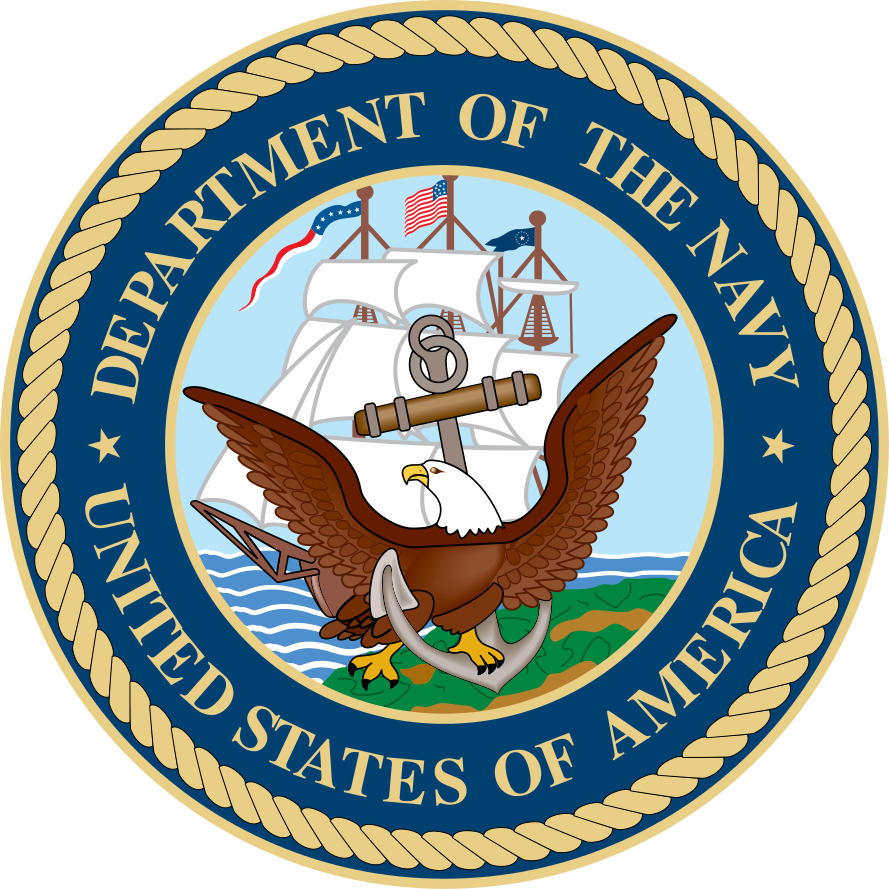

IT Jobs in the Navy
Thinking about joining the Navy and considering a career in an Information Technology related field? Below is a list of jobs (MOS's) available in the Navy:
INFORMATION PROFESSIONAL
Effective, secure communication in the cyber domain is essential to the everyday operations of military intelligence in America’s Navy.
Information Professionals who oversee the seamless operation of the global Naval network environment are key to these efforts. Their responsibilities include:
- Mapping out the network platforms of the future
- Ensuring the effectiveness of the Navy technologies
- Helping to develop and deploy information systems, command and control, and space systems
- Serving as a key part of the Information Dominance Corps in its mission to gain a deep understanding of the inner workings of adversaries and developing unmatched knowledge of the battlespace
during wartime
Qualifications:
- Bachelor's from a regionally accredited institution in a technical field, preferably - Information Systems, Electrical Engineering, Computer Engineering, Information Operations, Computer Science,
Systems Engineering or General Engineering. - U.S. Citizen
- Eligible for Top Secret/Sensitive Compartmented Information (SCI) security clearance
- Qualified for sea duty
INFORMATION SYSTEMS TECHNICIAN
In the Navy, information technology (IT) plays an important role in everything from electronic mail systems to shipboard control systems to
Special Intelligence (SI) systems. Navy Information System Technicians (IT specialists) are Enlisted Sailors who engage in a broad range of
responsibilities including network administration, database management and computer hardware and software implementation. Their responsibilities include:
- Operating and maintaining Navy global satellite telecommunications systems
- Serving as admin on mainframe computers and local and wide area networks
- Implementing micro-computer systems throughout the Fleet
- Serving as an important part of the Information Dominance Corps in its mission to gain a deep understanding of the inner workings of adversaries and developing unmatched knowledge of the
battlespace during wartime
Qualifications:
- A high school diploma or equivalent is required to become an Enlisted Sailor in the IT field in the Navy
- U.S. Citizen
- Eligible for Top Secret/Sensitive Compartmented Information (SCI) security clearance
- Good working aptitude of math, an understanding of modern computing devices and the capability to do highly detail-oriented work.
CRYPTOLOGIC WARFARE
Conducting psychological operations. Managing the application of cryptography and cryptanalysis. Advising decision makers at all levels.
Cryptologic Warfare Officers help ensure that America’s Navy capitalizes on the information vulnerabilities of our enemies. Their responsibilities include:
- Deterring and defeating aggression
- Providing warning of intent
- Ensuring freedom of action
- Achieving military objectives in and through cyberspace
- Maximizing the use of sensors, weapons, network communications and control systems
- Being a key part of the Information Dominance Corps in its mission to gain a deep understanding of the inner workings of adversaries and developing unmatched knowledge of the battlespace
during wartime
Qualifications:
- Bachelor's from a regionally accredited institution in a technical field, preferably - information systems, electrical engineering, computer engineering, information operations, computer science,
systems engineering, general engineering. - U.S. Citizen
- Eligible for Top Secret/Sensitive Compartmented Information (SCI) security clearance
- Eligible for sea duty
CRYPTOLOGIC TECHNICIAN
Analyzing encrypted electronic communications. Jamming enemy radar signals. Deciphering information in foreign languages. Maintaining the state-of-the-art
equipment and networks used to generate top secret intel. This is the highly specialized work of the Enlisted Sailors in the Navy Cryptology community.
Their responsibilities include:
- Collecting, analyzing and reporting on communication signals
- Utilizing computers, specialized computer-assisted communications equipment and video display terminals
- Serving as an important part of the Information Dominance Corps in its mission to gain a deep understanding of the inner workings of adversaries and develop unmatched knowledge of the
battlespace during wartime
Qualifications:
- A high school diploma or equivalent is required to become an Enlisted Sailor in the cryptology field in the Navy.
- U.S. Citizen
- Eligible for Top Secret/Sensitive Compartmented Information (SCI) security clearance
- They should have an interest in advanced electronics and technology; exceptionally good character; good speaking, writing and record-keeping skills; a good working aptitude of math; and the
capability to do highly detail-oriented, highly classified work
INTELLIGENCE
Direct the analysis of top-secret satellite imagery. Be the first to ascertain the implications of the latest spy reports. Use keen analytical abilities to perceive
patterns in Internet chatter.
Intelligence Officers serve at the forefront of national security as they:
- Supervise the collection, analysis and dissemination of critical information
- Provide intelligence support to US Naval forces and multinational military forces
- Advise executive-level decision makers in US government
- Lead Enlisted personnel in gathering and analyzing mission-sensitive intelligence
- Serve as a key part of the Information Dominance Corps in its mission to gain a deep understanding of the inner workings of adversaries and developing unmatched knowledge of the battlespace
during wartime
Qualifications:
- A high school diploma or equivalent.
- U.S. Citizen
- Eligible for Top Secret/Sensitive Compartmented Information (SCI) security clearance
- Interest in advanced electronics and technology; exceptionally good character; good speaking, writing and record-keeping skills; a good working aptitude of math; and the
capability to do highly detail-oriented, highly classified work
INTELLIGENCE SPECIALIST
The development of useful intelligence starts with the diligent efforts of Navy Intelligence Specialists who break down seemingly limitless raw data into relevant
and manageable pieces. The
responsibilities of these Enlisted Sailors may include:
- Tracking targets in real time
- Defending ships against inbound threats
- Operating state-of-the-art computer and communications equipment
- Serving as an important part of the Information Dominance Corps in its mission to gain a deep understanding of the inner workings of adversaries and develop unmatched knowledge of the
battlespace during wartime
Qualifications:
- A high school diploma or equivalent.
- U.S. Citizen
- Eligible for Top Secret/Sensitive Compartmented Information (SCI) security clearance
- good speaking, writing and record-keeping skills; a good working aptitude of math; and the capability to do highly detail-oriented work.
METEOROLOGY & OCEANOGRAPHY
Planning an air strike. Charting the best course for a deployed ship. Identifying currents that affect a submarine underway. Whatever the scenario, meteorology
and oceanography are factors that inevitably come into play. And Officers in this field help lead efforts to ensure safe and successful operations as they:
- Deliver a timely and accurate understanding of operational conditions from sea to space
- Manage those who monitor the surrounding physical environment
- Forecast weather conditions
- Serve as a key part of the Information Dominance Corps in its mission to gain a deep understanding of the inner workings of adversaries and develop unmatched knowledge of the battlespace
during wartime
Qualifications:
- Bachelor’s degree from a regionally accredited institution in a technical field, preferably in areas of study such as physics, physics-based oceanography, meteorology, hydrography, earth science; or
engineering. - U.S. Citizen
- Eligible for Secret security clearance
- Qualify for sea duty
AEROGRAPHER'S MATE
Monitoring sea conditions. Analyzing meteorological data. Developing accurate forecasts for virtually any locale in the world. Aerographer’s Mates are Enlisted
Sailors who do hands-on work that helps Navy Meteorologists and Oceanographers prepare Navy forces to succeed in any physical environment.
Their responsibilities include:
- Being the Navy’s meteorological and oceanographic experts
- Using instruments that monitor weather characteristics such as air pressure, temperature, humidity, and wind speed and direction
- Distributing weather data to aircraft, ships and shore-based commands
- Serving as an important part of the Information Dominance Corps in its mission to gain a deep understanding of the inner workings of adversaries and develop unmatched knowledge of the battlespace
during wartime
Qualifications:
- A high school diploma or equivalent
- U.S. Citizen
- Normal color perception who can meet eligibility requirements for a security clearance
- interest in aviation and weather; good speaking, writing and record-keeping skills; a good working aptitude of math; and the capability to do highly detail-oriented work.
US Navy Duty Station Locations
| United States | |
|---|---|
| California | |
| Connecticut | |
| District of Columbia | |
| Florida | |
| Georgia | |
| Hawaii | |
| Illinois | |
| Louisiana | |
| Maryland | |
| Mississippi | |
| Nevada | |
| New Hampshire | |
| New Jersey | |
| New York | |
| Rhode Island | |
| South Carolina | |
| Tennessee | |
| Texas | |
| Virginia | |
| Washington | International Locations |
| Bahrain | |
| Cuba | |
| Greece | |
| Italy | |
| Japan | |
| South Korea | |
| Spain | |